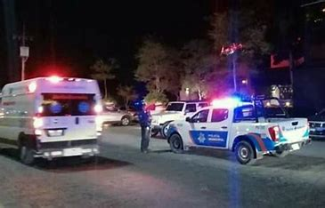
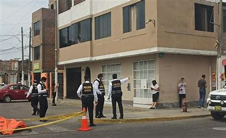
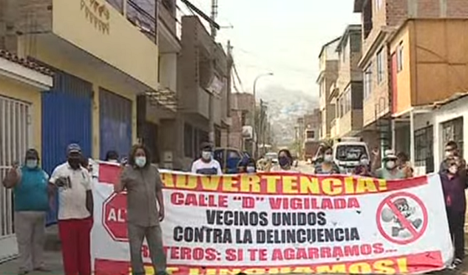
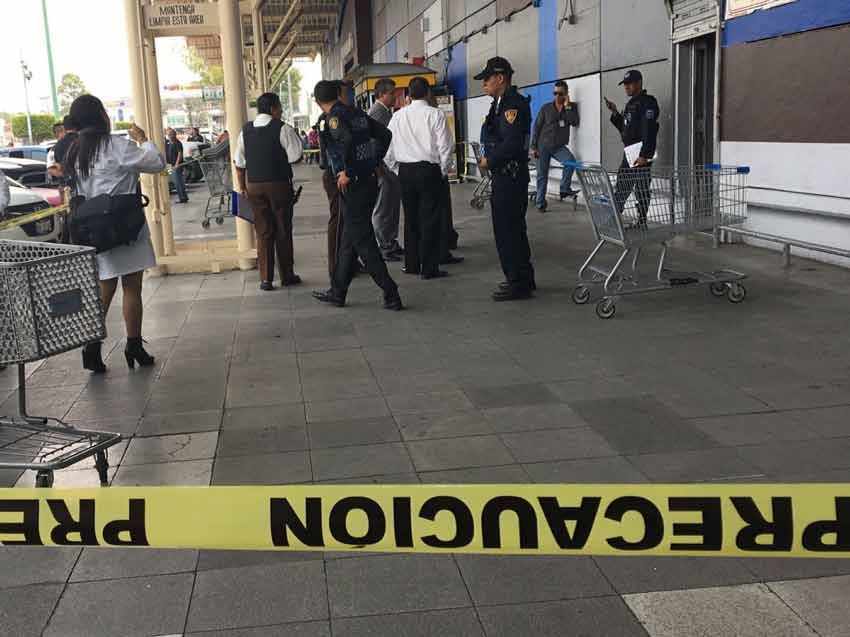

Posibles soluciones para la problematica de inseguridad en San juan de Lurigancho
Introducción
San Juan de Lurigancho es uno de los distritos más extensos y poblados de Lima, Perú. A lo
largo de los años, esta área ha enfrentado una serie de desafíos y problemas que afectan a su
comunidad de manera significativa.
Desde cuestiones relacionadas con la seguridad y el crimen, hasta desafíos en la
infraestructura y el acceso a servicios básicos, San Juan de Lurigancho se encuentra en una
encrucijada de necesidades urbanas. La diversidad socioeconómica, la densidad poblacional y
las disparidades en la calidad de vida son aspectos destacados que requieren atención
constante.Además, la calidad de la educación, la atención médica y la vivienda son
preocupaciones centrales en este distrito. La falta de oportunidades económicas y la
informalidad laboral también afectan a muchas familias en San Juan de Lurigancho.
Objetivos
- Objetivos generales
- Identificar los obstáculos y desafíos en la lucha contra la delincuencia del distrito de San Juan de Lurigancho.
- Describir la situación actual de la inseguridad ciudadana en San Juan de Lurigancho.
- Analizar las causas de la delincuencia en San Juan de Lurigancho
- Evaluar las políticas y estrategias que se han implementado para combatir la delincuencia en San Juan de Lurigancho
- Objetivos especificos
- Medir el impacto de la participación ciudadana en el distrito San Juan de Lurigancho
- Evaluar resultados cuantificables de las estrategias implementadas en el distrito San Juan de Lurigancho
- Analizar los factores sociales, económicos y culturales que contribuyen a la delincuencia en San Juan de Lurigancho.
- Evaluar las políticas y estrategias que se han implementado para combatir la delincuencia en San Juan de Lurigancho
- Proponer recomendaciones para mejorar la lucha contra la delincuencia en San Juan de Lurigancho
- Resultados esperados
Los resultados esperados en la lucha contra la delincuencia suelen someterse de una conjugación de factores, incluyendo medidas de aplicación de la ley, programas de prevención del delito, participación comunitaria y mejoras en las condiciones socioeconómicas. Algunos posibles resultados esperados podrían incluir
- Reducción de la tasa de criminalidad: Se sostiene que las acciones tomadas por las autoridades y la comunidad contribuyen a una disminución de los índices de delincuencia y criminalidad en San Juan de Luriganch
- Desarticulación de bandas criminales: A través de operativos policiales y medidas de seguridad, se espera desmantelar organizaciones criminales que operan en la zona
- Mejora en la seguridad ciudadana: El fortalecimiento del aumento de mayor vigilancia de policías y la implementación de estrategias de seguridad pueden contribuir a una seguridad mejorada entre los residentes.
- Desarticulación de bandas criminales: A través de operativos policiales y medidas de seguridad implementadas, se espera desmantelar organizaciones criminales que operan en la zona
- Participación comunitaria: La involucración activa de la comunidad en programas de prevención del delito y en la denuncia de actividades de delincuencia puede fortalecer los esfuerzos para combatir la delincuencia
- Colaboración interinstitucional: La coordinación efectiva entre diferentes organismos gubernamentales y organizaciones de la sociedad civil puede mejorar la eficacia de las medidas contra la delincuencia
Problematica
San Juan de Lurigancho es uno de los distritos más grandes y con más población, con datos según la Inei en el 2023 está llegando a más de 1 millón 200 mil habitantes. Según la base de datos de la PNP, en el primer trimestre del 2021 se registraron 12 mil 462 incidentes de robo (138 al día); en 2022 llegó a 20 mil 030 casos (223 al día); y en 2023, se elevó a 26 mil 652 robos (296 al día)
- Desigualdad y carencia de servicios básicos:San Juan de Lurigancho enfrenta
desafíos arraigados en su historia, como la informalidad, la pobreza y la falta de
servicios básicos. Este contexto refleja un rezago social que se traduce en
desigualdades significativas. La falta de acceso equitativo a servicios esenciales
contribuye de manera directa a la magnitud del problema de inseguridad en el
distrito, creando condiciones que aumentan la vulnerabilidad de la comunidad. La
superación de estos desafíos requiere abordar las raíces de la desigualdad y
trabajar
en soluciones integrales para mejorar las condiciones de vida en San Juan de
Lurigancho.
Ejemplo: Sectores de San Juan de Lurigancho con acceso limitado a servicios como agua potable, alcantarillado o iluminación pública, lo que crea condiciones propicias para la inseguridad y afecta la calidad de vida de los residentes - Crimen organizado y extorsiones:En San Juan de Lurigancho,
la insuficiencia de fuerzas policiales es evidente, con un déficit de al menos 2,000
agentes necesarios para brindar una cobertura adecuada en términos de seguridad.
Esta carencia se suma a la problemática situación de las comisarías locales y a la
limitada cobertura que estas proporcionan. Residentes expresan su preocupación,
señalando que los agentes rara vez se desplazan a las zonas de mayor altitud,
conocidas como "los cerros", lo que crea vacíos de seguridad. Además, se destaca la
falta de una política coherente para abordar de manera efectiva el persistente
problema de inseguridad en el distrito. La combinación de estos factores contribuye
a un escenario donde la presencia y la respuesta policial no son suficientes para
hacer frente a los desafíos de seguridad en la comunidad..
Ejemplo: Actividades delictivas llevadas a cabo por bandas como "Los Malditos de Bayóvar", que han generado un ambiente de temor y vulnerabilidad entre los habitantes, exacerbando la inseguridad en el distrito. - Falta de recursos policiales y cobertura insuficiente:En San Juan de
Lurigancho,
la insuficiencia de fuerzas policiales es evidente, con un déficit de al menos 2,000
agentes necesarios para brindar una cobertura adecuada en términos de seguridad.
Esta carencia se suma a la problemática situación de las comisarías locales y a la
limitada cobertura que estas proporcionan. Residentes expresan su preocupación,
señalando que los agentes rara vez se desplazan a las zonas de mayor altitud,
conocidas como "los cerros", lo que crea vacíos de seguridad. Además, se destaca la
falta de una política coherente para abordar de manera efectiva el persistente
problema de inseguridad en el distrito. La combinación de estos factores contribuye
a un escenario donde la presencia y la respuesta policial no son suficientes para
hacer frente a los desafíos de seguridad en la comunidad.
Ejemplo: La limitada presencia policial en áreas específicas, especialmente en las zonas de mayor altitud o difícil acceso, crea vacíos de seguridad que son explotados por grupos delictivos, contribuyendo a la perpetuación de la inseguridad.

Causas
La problemática de la delincuencia en San Juan de Lurigancho es influenciada por una
serie de factores interrelacionados. Algunos de los factores clave que contribuyen a
esta problemática incluyen la desigualdad económica ya que por falta de
oportunidades laborales pueden llevar a la delincuencia como una opción para obtener
ingresos en comunidades desfavorecidas; Redes de pandillas y crimen organizado
porque la presencia de pandillas y grupos delictivos organizados puede contribuir a la
violencia y la delincuencia en la zona; como lo demuestra un caso en san juan de
Lurigancho cubierto por el diario La República donde se ve el incremento de robos a
escolares, por lo cual las madres se sienten indignadas, una mencionó en la puerta del
colegio David Ausubel, en la urbanización Las Flores. “Los delincuentes ya no tienen
escrúpulos, pareciera que no tuvieran hijos”, demostrando la problemática que
enfrenta este distrito.
Otra causa es la falta de aplicación de la ley y corrupción
debido
a que la falta de respuesta efectiva por parte de las autoridades y la corrupción en las
fuerzas del orden pueden minar la confianza de la comunidad en las instituciones y
aumentar la impunidad; Villafranca Pérez señalo“la falta de seguridad ciudadana (35%)
es, junto al desempleo, la pobreza y la corrupción, uno de los problemas que más le
afecta a la mayoría de peruanas y peruanos”. Entre uno de los factores destacados es
sobre la migración interna porque el crecimiento de la población debido a este factor
puede ejercer presión sobre los recursos y aumentar la competencia por empleos y
viviendas, lo que puede contribuir a la delincuencia. Además, el término de
inseguridad ciudadana hace referencia al temor que sufre la población a sufrir posibles
violaciones, asaltos, agresiones o secuestros como consecuencia del alto grado de
delincuencia, sin embargo, la lucha contra la delincuencia es un desafío continuo que
requiere la colaboración de múltiples actores y un enfoque integral
Consecuencias
La delincuencia es un problema grave que afecta a todos los sectores de la sociedad, pero en el caso de San Juan de Lurigancho, el impacto es aún más severo. Según un estudio realizado por el Instituto Nacional de Estadística e Informática (INEI 2022) señaló el cuál San Juan de Lurigancho es el distrito con la tasa de victimización más alta de Lima Metropolitana, con un 35% de los hogares afectados por algún tipo de delito en el último año. Las consecuencias de la delincuencia en San Juan de Lurigancho son diversas, y se pueden dividir en dos categorías principales:


- Consecuencias individuales de la delincuencia en San Juan de Lurigancho:
Las consecuencias individuales de la delincuencia en San Juan de Lurigancho pueden ser muy graves. Algunas de las consecuencias más comunes incluyen: Daños físicos: Los delitos pueden causar lesiones graves, incluso la muerte. En 2022, la tasa de homicidios en San Juan de Lurigancho fue de 12,8 por cada 100.000 habitantes, la más alta de Lima Metropolitana. Daños psicológicos: Los delitos también pueden causar daños psicológicos, como estrés, ansiedad y depresión. En un estudio realizado por la Universidad Nacional Mayor de San Marcos (UNMSM) en 2021, se encontró que el 40% de las víctimas de delitos en San Juan de Lurigancho experimentaron algún tipo de problema psicológico como consecuencia del delito.
Pérdidas económicas: Los delitos también pueden causar pérdidas económicas, como robo de bienes, daños a la propiedad, y pérdida de ingresos. En un estudio realizado por el INEI en 2022, se encontró que el 25% de las víctimas de delitos en San Juan de Lurigancho sufrieron pérdidas económicas como consecuencia del delito. Sentimiento de inseguridad y desconfianza: La delincuencia también puede generar un sentimiento de inseguridad y desconfianza en las personas. Esto puede dificultar su vida cotidiana, ya que pueden tener miedo de salir de casa, caminar por la calle, o dejar sus pertenencias desatendidas. -
Consecuencias sociales de la delincuencia en San Juan de Lurigancho:
Las consecuencias sociales de la delincuencia en San Juan de Lurigancho también pueden ser muy graves. Algunas de las consecuencias más comunes incluyen: Clima de inseguridad: La delincuencia puede generar un clima de inseguridad en la comunidad, que puede dificultar el desarrollo económico y social. Las empresas pueden tener miedo de invertir en la zona, y las personas pueden tener miedo de salir de casa, lo que puede afectar a la economía local y a la calidad de vida de los habitantes. Desconfianza: La delincuencia también puede generar desconfianza entre las personas. Esto puede dificultar la convivencia y la cooperación en la comunidad, lo que puede dificultar la solución de problemas comunes
Violencia: La delincuencia también puede generar violencia en la comunidad. Esto puede manifestarse en forma de peleas callejeras, pandillerismo, y delitos violentos, como el robo agravado y el homicidio
Posible solucion a la problematica
- Desigualdad y carencia de servicios básicos:
- Establecer alianzas con organizaciones y empresas privadas para invertir en proyectos de infraestructura en el distrito, facilitando la llegada de servicios básicos a los sectores más desfavorecidos
- Promover la participación ciudadana y comunitaria en la identificación de necesidades y la planificación de soluciones, para asegurar que se atiendan las demandas reales de la población
- Crimen organizado y extorsiones:
- Reforzar la presencia policial en San Juan de Lurigancho y brindar capacitación especializada a los agentes para combatir el crimen organizado y las extorsiones.
- Fomentar la participación ciudadana en la prevención del crimen, promoviendo la confianza y colaboración entre la comunidad y las autoridades.
- Falta de recursos policiales y cobertura insuficiente:
- Establecer convenios de cooperación con otras regiones o municipios para reforzar la presencia policial en zonas críticas del distrito.
- Implementar estrategias de patrullaje comunitario y trabajo conjunto entre la policía y los vecinos, para colaborar en la prevención y el combate del delito.
Estas soluciones requieren de un esfuerzo coordinado entre el gobierno local, el gobierno central, la sociedad civil y la comunidad en general. Además, es importante que se realicen evaluaciones periódicas y se realicen ajustes a las estrategias implementadas, para asegurar su eficacia y continuidad en el tiempo.
Medidas que ha tomado el alcalde
La situación en San Juan de Lurigancho es grave, con un aumento alarmante de la violencia y la delincuencia en la zona. El alcalde Jesús Maldonado ha solicitado la declaración de estado de emergencia para el distrito debido a la explosión ocurrida en una discoteca que dejó 15 personas heridas
Además, se relaciona esta situación con la ola de violencia que ya ha cobrado la vida de 80 personas en lo que va del año en esta jurisdicción. La declaración de estado de emergencia implica una serie de medidas extraordinarias para abordar la situación. En este caso, la presidenta Dina Boluarte, junto con el Consejo de Ministros del Perú, ha aprobado esta medida con el objetivo de enfrentar la delincuencia y la criminalidad organizada en San Juan de Lurigancho.
“(La declaratoria de emergencia) va a permitir el control del orden interno a cargo de la Policía Nacional, pero el apoyo estratégico y los activos críticos a cargo de las Fuerzas Armadas. Y también esto va a permitir que se pueda ingresar y extender las actividades y las funciones policiales en el control del orden interno”, señaló Alberto Otárola Presidente del Consejo de Ministros del Perú.
Algunas de las medidas que suelen implementarse bajo un estado de emergencia incluyen:Mayor presencia policial y militar en la zona: La Policía Nacional y las Fuerzas Armadas pueden desplegarse para controlar el orden interno y reforzar la seguridad en el distrito.Ministro del Interior y alcalde de SJL acuerdan nuevas acciones para combatir la inseguridad ciudadana En ese marco, se acordó, entre otras medidas, la entrega por parte del municipio de SJL de diez patrulleros policiales repotenciados con recursos ediles.Estas unidades serán reincorporadas a la flota de vehículos de la PNP, para fortalecer la lucha contra la inseguridad ciudadana en esa densa circunscripción territorial del cono Este de la capital.

Conclusión
La lucha contra la delincuencia en San Juan de Lurigancho implica un esfuerzo multifacético que abarca aspectos sociales, económicos y de seguridad. Algunas de las estrategias implementadas incluyen el fortalecimiento de la presencia policial en áreas vulnerables, la promoción de programas de prevención del delito, la inversión en infraestructura comunitaria y la sensibilización pública sobre la importancia de la participación ciudadana en la seguridad,como también los esfuerzos comunitarios y la creación de comités vecinales, recordemos que es fundamental la participación activa de la comunidad en la lucha contra la delincuencia .
Es fundamental abordar las causas subyacentes de la delincuencia, como la pobreza, la desigualdad, la falta de oportunidades y la educación inadecuada. Asimismo, la colaboración entre la comunidad, las autoridades locales y la sociedad civil es esencial para lograr un impacto duradero en la reducción de la delincuencia y la mejora de la calidad de vida en San Juan de Lurigancho. La lucha contra la delincuencia en San Juan de Lurigancho es un desafío constante y multifacético que involucra a la comunidad, las autoridades locales y la sociedad en su conjunto. A lo largo de los años, se han implementado una serie de estrategias y medidas para abordar este problema. Sin embargo, es importante destacar que no existe una solución única o definitiva para erradicar por completo la delincuencia en cualquier área.
Video Informativo
Si deseas conocer más informacion acerca de este tema tratado, te
invitamos a descargar el
siguiente archivo para que lo conozcas de mejor manera
👉
Click aquí
Referencias
- (S/f-b). Gestion.pe. Recuperado el 10 de octubre de 2023, de https://gestion.pe/peru/gobierno-declara-en-estado-de-emergencia-distritos-de-san-jua
- Angulo J.(16 de septiembre de 2023)¿Por que el gobierno no declara en estado de emergencia SJL a pesar de los crímenes ,asaltos y extorsión que campean en el distrito?.recuperado de https://www.infobae.com/peru
- Chipana, C. C., & Chipana, C. C. (2022, 25 septiembre). En SJL, 3 de cada 10 habitantes han sido víctimas de algún hecho delictivo. La República.pe https://larepublica.pe/sociedad/2022/09/25/san-juan-de-lurigancho-en-sjl-3-de-cada-10-habitant
- Angulo J.(16 de septiembre de 2023)¿Por que el gobierno no declara en estado de emergencia SJL a pesar de los crímenes ,asaltos y extorsión que campean en el distrito?.recuperado d https://www.infobae.com/peru/2023/09/16/por-que-el-gobierno-no-declara-en-emergencia-a-sn-juan-de-lurigancho-a-pesar-de-los-crimenes-asaltos-y-extorsion-que-campean-en-el-distrito/
- Redaccion EC.(17 de septiembre de 2023)Qué dijo el alcalde de SJL sobre marcha de protesta contra la delincuencia en su distrito ,recuperado de https://elcomercio.pe/respuestas/que/que-dijo-el-alcalde-de-sjl-sobre-marcha-de-protesta-contr
- Ramirez S.(22 de septiembre de 2023)Estado de emergencia en San Juan de Lurigancho y San Martin de Porres , recuperado de https://elcomercio.pe/lima/estado-de-emergencia-en-san-juan-de-lurigancho-y-san-martin-de-po
- Ramirez R. (2022) PLAN DE ACCIÓN DISTRITAL DE SEGURIDAD CIUDADANA 2022 MUNICIPALIDAD DE SAN JUAN DE LURIGANCHO https://web.munisjl.gob.pe/web/data_files/codisec/PADSC-SJL-2022-PROY-FIN-CARL
- (S/f-b). Gestion.pe. Recuperado el 8 de octubre de 2022 , de https://alicia.concytec.gob.pe/vufind/Record/UCVV_191b3d59c7fc915e0c9884c4c8505322
- Instituto Nacional de Estadística e Informática (INEI). (2022). Encuesta Nacional de Victimización y Percepción de Seguridad Ciudadana – ENVIPE 2022. Lima, Perú: INEI. https://cybertesis.unmsm.edu.pe/bitstream/handle/20.500.12672/15447/Ramirez_me.pdf?seque
- Universidad Nacional Mayor de San Marcos (UNMSM). (2021). Estudio sobre la violencia y la delincuencia en San Juan de Lurigancho. Lima, Perú: UNMSM. https://cybertesis.unmsm.edu.pe/bitstream/handle/20.500.12672/15447/Ramirez_me.pdf?sequence=1&isAllowed=y
- Data, L. R. (2023, octubre 30). ¿Es San Juan de Lurigancho el distrito más inseguro de Lima o solo una consecuencia de la desigualdad? La República. https://data.larepublica.pe/san-juan-de-lurigancho-es-el-distrito-mas-inseguro-de-lima-o-solo-consecuencia-de-la-desigualdad/
- Olmo, G. D. (2023, octubre 24). Perú: San Juan de Lurigancho, el distrito más poblado del país, en emergencia por el aumento de las extorsiones. BBC https://www.bbc.com/mundo/articles/cl7z7zxwk8eo
- (S/f). Gob.pe. Recuperado el 29 de noviembre de 2023, de https://web.munisjl.gob.pe/web/data_files/codisec/PADSC-SJL-2022-PROY-FIN-CARLOS-ENRIQUE-GUTIERREZ-MACO-2021.pdf%7D
- Mirada, O. (2015, julio 23). Inseguridad ciudadana en San Juan de Lurigancho. OtraMirada. https://otramirada.pe/inseguridad-ciudadana-en-san-juan-de-lurigancho
- Villafranca Pérez, Luis Alberto (2011, 14 diciembre). La política pública local de seguridad ciudadana en el distrito de San Juan de Lurigancho entre el 2003-2005. https://tesis.pucp.edu.pe/repositorio/handle/20.500.12404/1150
/2023/09/16/por-que-el-gobierno-no-declara-en-emergencia-a-san-juan-de-lurigancho-a-pesar-de-los-crimenes-asaltos-y-extorsion-que-campean-en-el-distrito/